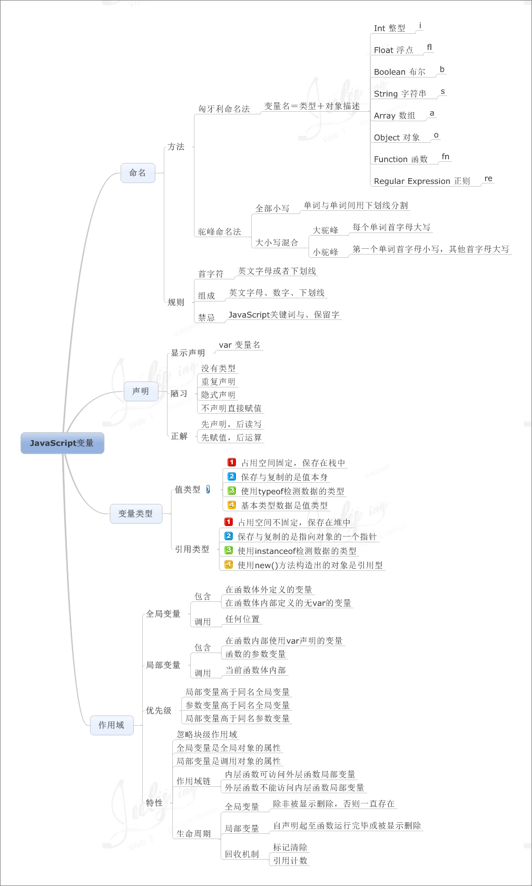
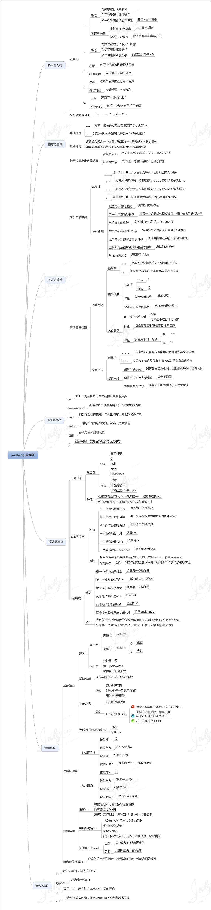
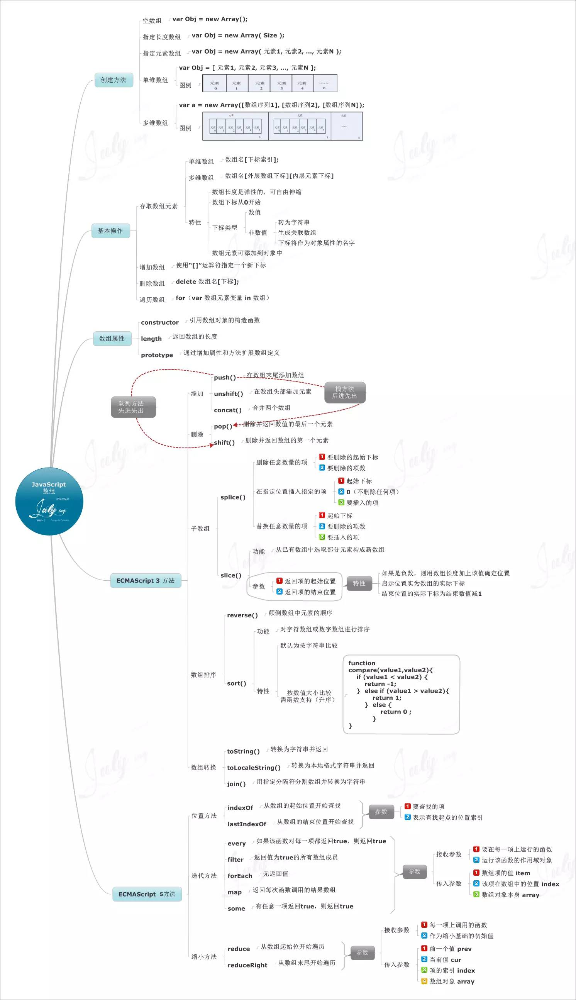
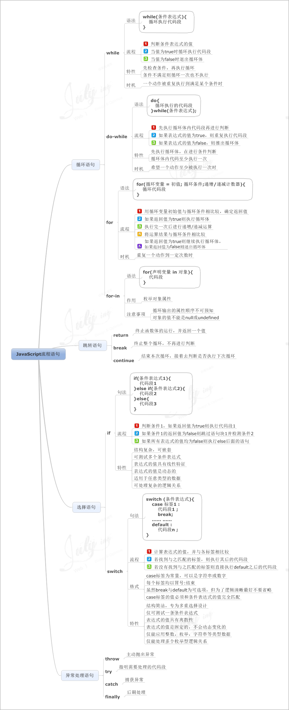
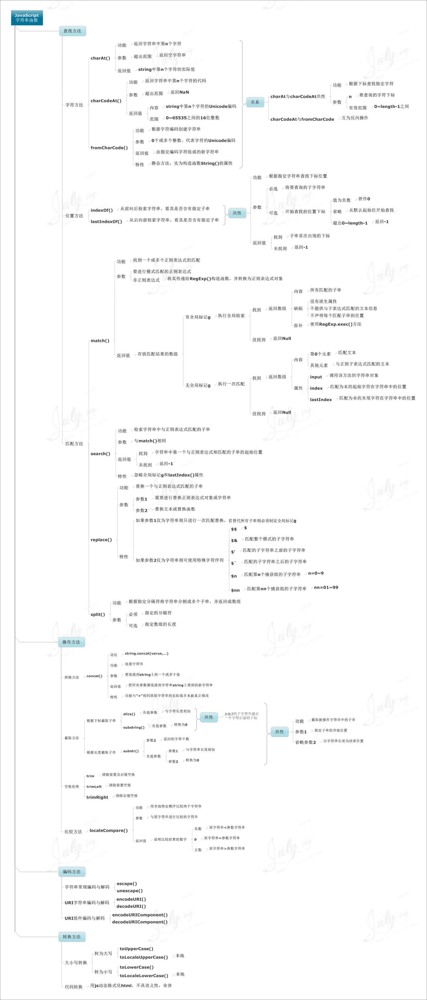
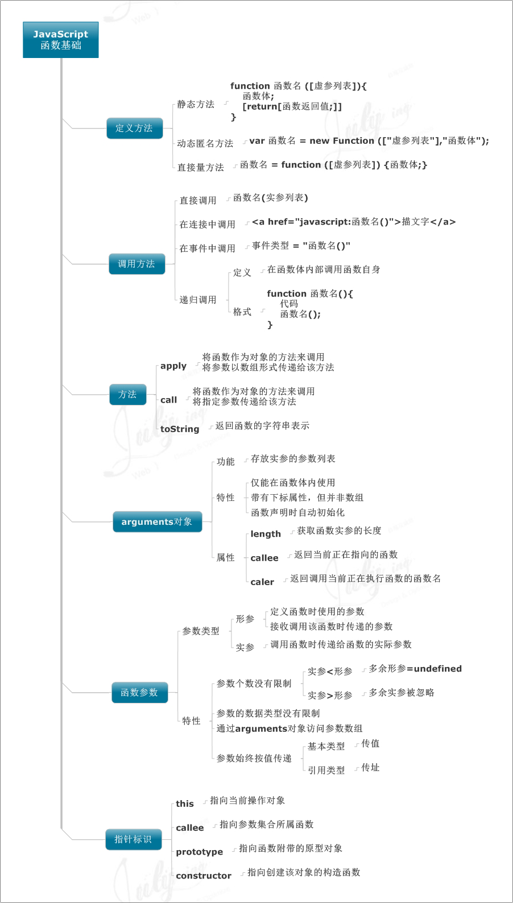
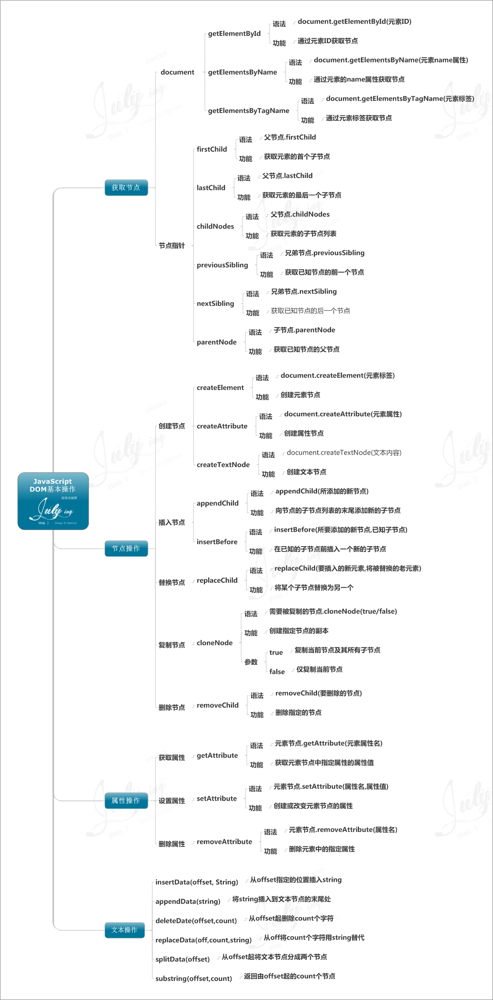
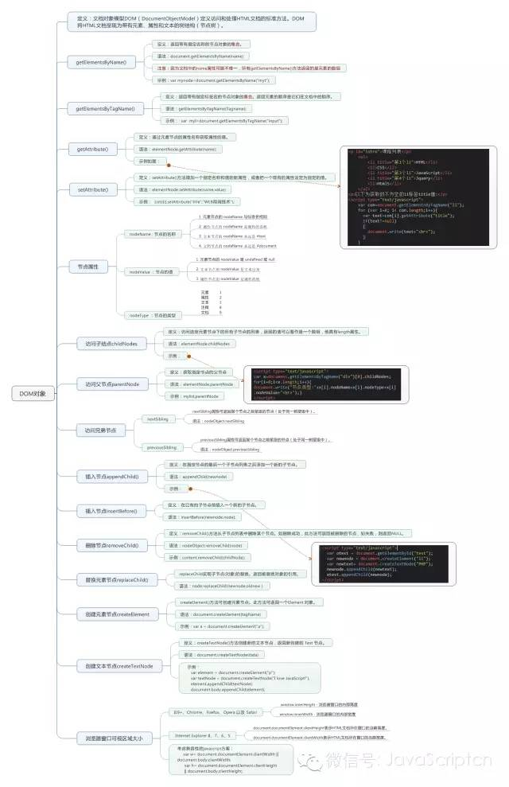
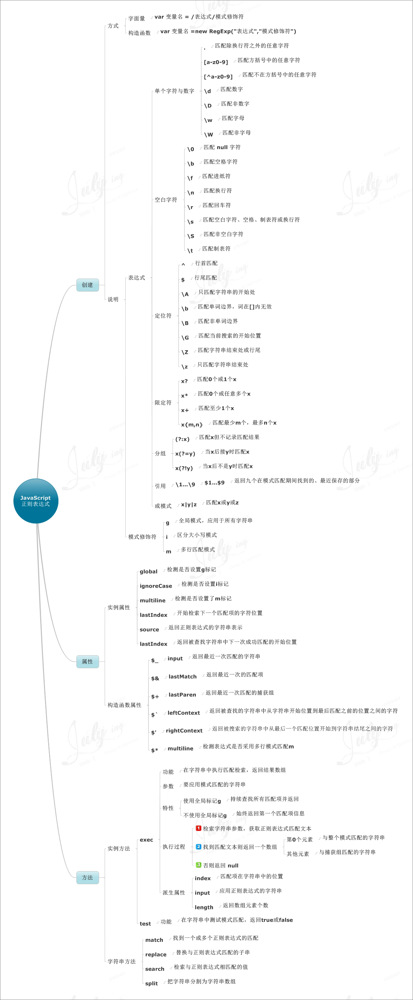

学习的道路就是要不断的总结归纳，好记性不如烂笔头，so，下面将po出10张JavaScript相关的思维导图。
思维导图小tips：思维导图又叫心智图，是表达发射性思维的有效的图形思维工具 ，它简单却又极其有效，是一种革命性的思维工具。思维导图运用图文并重的技巧，把各级主题的关系用相互隶属与相关的层级图表现出来，把主题关键词与图像、颜色等建立记忆链接，思维导图充分运用左右脑的机能，利用记忆、阅读、思维的规律，协助人们在科学与艺术、逻辑与想象之间平衡发展，从而开启人类大脑的无限潜能。思维导图因此具有人类思维的强大功能。
分别归类为：
JavaScript变量
JavaScript运算符
JavaScript数组
JavaScript流程语句
JavaScript字符串函数
JavaScript函数基础
JavaScript基础DOM操作
DOM文档对象模型
BOM浏览器对象模型
JavaScript正则表达式
能够认真看完就是一次对javascript的回顾与提升，可以很好的检验基础。

JavaScript运算符

JavaScript数组

JavaScript流程语句

JavaScript字符串函数

JavaScript函数基础

JavaScript基础DOM操作

DOM文档对象模型

BOM浏览器对象模型
JavaScript正则表达式

是的，没有高深的知识，没有进阶的技巧。
只是，万丈高楼平地起；只是，千里之行始于足下；只是，千里长提溃于蚁穴。
能把简单的做好就是不简单，你能走多远，不是在于你有多聪明，而是取决于你有多勤奋，共勉。
附上高清原图下载地址：http://www.runoob.com/wp-content/uploads/2016/03/javascript思维导图.zip
![]()